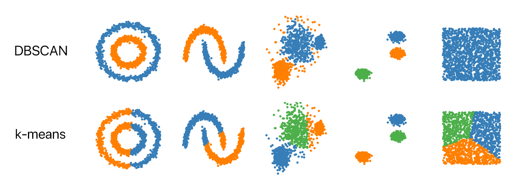

iPAS AI應用規劃師 初級
人工智慧基礎概論 小道消息001
主題分類
1
人工智慧基本概念
2
資料處理與分析
3
機器學習基礎
4
監督式學習
5
非監督式學習
6
強化學習
7
深度學習模型
8
鑑別式 vs 生成式 AI
#1
★★★★★
關於人工智慧 (AI) 的範疇，以下敘述何者最不正確？ (參考 考題 Q2, Q9)
答案解析
選項 (C) 的敘述是錯誤的。人工智慧 (AI) 是一個廣泛的領域，深度學習 (Deep Learning) 雖然是當前非常熱門且強大的技術，但並非 AI 的全部。AI 包含了機器學習 (ML)（而深度學習是機器學習的一個子領域）、傳統的專家系統、自然語言處理 (NLP)、搜尋演算法、規劃等多種技術與方法，這些方法在特定場景下仍然非常重要和有效。
選項 (A)、(B)、(D) 均為正確描述。AI 應用廣泛 (A)，ML 和 DL 是其中的重要技術 (B)，專家系統和 NLP 也是 AI 的組成部分 (D)。
選項 (A)、(B)、(D) 均為正確描述。AI 應用廣泛 (A)，ML 和 DL 是其中的重要技術 (B)，專家系統和 NLP 也是 AI 的組成部分 (D)。
#2
★★★★
哪種類型的 AI 主要功能是根據輸入的提示 (prompt) 來生成全新的內容，例如文章、圖片或程式碼？ (參考 考題 Q7)
答案解析
生成型 AI (Generative AI) 的核心能力就是根據使用者提供的輸入提示（例如文字描述、問題、指令），創造出前所未有的新內容，這些內容可以是文字、圖像、音訊、視訊或程式碼等形式。
選項 (A) 分析型 AI 主要洞悉數據模式。
選項 (B) 預測型 AI 主要預測未來趨勢。
選項 (D) 反應型 AI (Reactive AI) 是指只能對當前情況做出反應，沒有記憶能力的 AI，例如早期的棋類遊戲 AI。
選項 (A) 分析型 AI 主要洞悉數據模式。
選項 (B) 預測型 AI 主要預測未來趨勢。
選項 (D) 反應型 AI (Reactive AI) 是指只能對當前情況做出反應，沒有記憶能力的 AI，例如早期的棋類遊戲 AI。
#3
★★★★★
為了提升 AI 系統的透明性 (Transparency)，下列哪一項措施最為適當？ (參考 考題 Q3)
答案解析
提升 AI 透明性 (Transparency) 的核心目的在於讓使用者、監管機構和公眾能夠理解 AI 系統如何運作、做出決策的依據以及其潛在的限制與風險。選項 (C) 透過公開的報告、技術文件或網站揭露相關資訊（例如系統目的、使用的數據類型、基本工作原理、性能指標、局限性等），是增加透明度的直接且適當的方法。
選項 (A) 完全保密與透明性背道而馳。
選項 (B) 僅內部口頭說明範圍有限且缺乏正式記錄。
選項 (D) 以複雜為由拒絕解釋，無法建立信任和提高透明度。
選項 (A) 完全保密與透明性背道而馳。
選項 (B) 僅內部口頭說明範圍有限且缺乏正式記錄。
選項 (D) 以複雜為由拒絕解釋，無法建立信任和提高透明度。
#4
★★★★★
在 AI 治理 (AI Governance) 方面，加強國際合作的主要原因不包含下列何者？ (參考 考題 Q10 - 題目已改為否定形式以測試理解)
答案解析
AI 治理 中的國際合作，其目的在於共同應對 AI 帶來的全球性挑戰與機遇，促進負責任的 AI 發展。
選項 (A)、(B)、(D) 均是國際合作的重要目標：(A) 制定共同標準有利於全球 AI 生態系的健康發展；(B) 合作監管可以更有效地應對跨國界的 AI 風險；(D) 技術轉移和資源共享有助於實現 AI 的普惠性。
選項 (C) 的目標是追求單一國家的技術霸權和壁壘，這與國際合作、開放共享的精神相悖，因此不是國際合作在 AI 治理中的主要原因。
選項 (A)、(B)、(D) 均是國際合作的重要目標：(A) 制定共同標準有利於全球 AI 生態系的健康發展；(B) 合作監管可以更有效地應對跨國界的 AI 風險；(D) 技術轉移和資源共享有助於實現 AI 的普惠性。
選項 (C) 的目標是追求單一國家的技術霸權和壁壘，這與國際合作、開放共享的精神相悖，因此不是國際合作在 AI 治理中的主要原因。
#5
★★★★★
當一份數據報告顯示某地區的房價分布呈現明顯的右偏（正偏態）時，使用哪一個集中趨勢量數最能代表該地區房價的「典型」或「中間」水平，且較不受極端高房價影響？ (參考 考題 3.2 Q5, Q8)
答案解析
對於偏態分佈（Skewed Distribution）的數據，特別是正偏態分佈（尾巴偏右，表示有少數極高的數值），平均數 (Mean) 很容易受到這些極端高值的影響而被拉高，可能無法反映數據的集中趨勢。
中位數 (Median) 是將數據排序後位於最中間位置的數值，它不受極端值的影響。因此，在有離群值或偏態分佈的情況下，中位數通常是衡量集中趨勢的更穩健（Robust）的指標。
眾數 (Mode) 是出現次數最多的值，可能不適用於連續數據或有多個眾數的情況。
全距 (Range) 衡量的是數據的分散程度，而非集中趨勢。
在正偏態分佈中，通常關係為：平均數 > 中位數 > 眾數。
中位數 (Median) 是將數據排序後位於最中間位置的數值，它不受極端值的影響。因此，在有離群值或偏態分佈的情況下，中位數通常是衡量集中趨勢的更穩健（Robust）的指標。
眾數 (Mode) 是出現次數最多的值，可能不適用於連續數據或有多個眾數的情況。
全距 (Range) 衡量的是數據的分散程度，而非集中趨勢。
在正偏態分佈中，通常關係為：平均數 > 中位數 > 眾數。

#6
★★★★★
某線上零售商想找出在其平台上最常被購買的商品類別，以便進行庫存管理和行銷推廣。哪一個敘述性統計量數最適合用來達成這個目標？ (參考 考題 3.2 Q10)
答案解析
眾數 (Mode) 的定義是在一組數據中出現頻率最高的值。題目想找出「最常被購買」的商品類別，這正是眾數所要表達的概念。商品類別屬於類別資料 (Categorical Data)，眾數是描述類別資料集中趨勢最常用的指標。
選項 (A) 平均數和 (B) 中位數 主要適用於數值型資料 (Numerical Data)，無法直接計算類別資料的平均數或中位數。
選項 (D) 標準差 衡量的是數據的分散程度，與找出最常見項目無關。
選項 (A) 平均數和 (B) 中位數 主要適用於數值型資料 (Numerical Data)，無法直接計算類別資料的平均數或中位數。
選項 (D) 標準差 衡量的是數據的分散程度，與找出最常見項目無關。
#7
★★★★★
下列哪個統計量數衡量了數據中間 50% 的散佈範圍，並且不容易受到極端值（離群值）的影響？ (參考 考題 3.2 Q9)
答案解析
四分位距 (Interquartile Range, IQR) 的計算方式是第三四分位數 (Q3) 減去第一四分位數 (Q1)，即 IQR = Q3 - Q1。Q1 代表數據中第 25 百分位數的值，Q3 代表第 75 百分位數的值。因此，IQR 正好涵蓋了數據排序後中間 50% 的範圍。由於計算 IQR 只涉及 Q1 和 Q3，忽略了數據兩端的極端值，所以它是一個衡量數據分散程度的穩健指標，不易受離群值影響。
選項 (A) 全距 是最大值減最小值，極易受極端值影響。
選項 (C) 標準差 在計算時會考慮所有數據點與平均值的偏差，也會受極端值影響。
選項 (D) 平均數 是衡量集中趨勢的指標，不是衡量散佈範圍的，且易受極端值影響。
選項 (A) 全距 是最大值減最小值，極易受極端值影響。
選項 (C) 標準差 在計算時會考慮所有數據點與平均值的偏差，也會受極端值影響。
選項 (D) 平均數 是衡量集中趨勢的指標，不是衡量散佈範圍的，且易受極端值影響。

#8
★★★★★
在比較兩條生產線的產品重量穩定性時，發現生產線 A 的產品重量標準差 (Standard Deviation) 為 0.5 克，生產線 B 的產品重量標準差為 1.5 克。這表示什麼？ (參考 考題 3.2 Q2)
答案解析
標準差 (Standard Deviation) 是衡量數據點相對於其平均值的分散程度或離散程度的常用指標。標準差的值越大，表示數據點越分散，彼此之間的差異越大，數據的波動性越大，因此穩定性越差。反之，標準差的值越小，表示數據點越集中在平均值附近，波動性越小，穩定性越高。
在本題中，生產線 A 的標準差 (0.5 克) 小於 生產線 B 的標準差 (1.5 克)，這表示生產線 A 產出的產品重量更加集中，波動較小，因此穩定性較高。
在本題中，生產線 A 的標準差 (0.5 克) 小於 生產線 B 的標準差 (1.5 克)，這表示生產線 A 產出的產品重量更加集中，波動較小，因此穩定性較高。
#9
★★★★★
在進行探索性資料分析 (EDA) 時，下列哪一種圖表工具主要用於比較多個變數在不同個體上的表現，而較不適合直接用來估計單一資料集的分佈狀況？ (部分參考 考題 3.2 Q4)
答案解析
雷達圖 (Radar chart)，也稱為蜘蛛圖或星形圖，通常用於展示多個定量變數在一個或多個觀察對象（個體）上的數值表現。每個變數對應圖上的一個軸（從中心輻射出來），數值大小決定了在該軸上的點的位置，最後將各軸上的點連接起來形成一個多邊形。它非常適合比較不同個體在多個指標上的綜合表現或差異。
然而，雷達圖不適合直接用來觀察單一變數在整個資料集中的分佈情況（例如數據的集中趨勢、分散程度、偏態等）。
選項 (A) 直方圖 用於顯示數值數據的分佈頻率。
選項 (B) 散佈圖 用於顯示兩個數值變數之間的關係。
選項 (C) 盒鬚圖 基於四分位數 (Quartile)，能有效展示數據的分佈、中位數、離散程度（IQR）及潛在離群值。
這些工具（A、B、C）都常用於估計或視覺化資料集的分佈特性。
然而，雷達圖不適合直接用來觀察單一變數在整個資料集中的分佈情況（例如數據的集中趨勢、分散程度、偏態等）。
選項 (A) 直方圖 用於顯示數值數據的分佈頻率。
選項 (B) 散佈圖 用於顯示兩個數值變數之間的關係。
選項 (C) 盒鬚圖 基於四分位數 (Quartile)，能有效展示數據的分佈、中位數、離散程度（IQR）及潛在離群值。
這些工具（A、B、C）都常用於估計或視覺化資料集的分佈特性。

#10
★★★★★
在進行假說檢定 (Hypothesis Testing) 時，如果研究者設定的顯著水準 (α) 為 0.05，而計算得到的 p 值 (p-value) 為 0.03，則應該做出什麼結論？ (參考 考題 3.2 Q7)
答案解析
假說檢定 的決策規則是將計算出的 p 值 (p-value) 與事先設定的顯著水準 (α) 進行比較：
選項 (C) 和 (D) 是在得到結果後改變分析條件，這在標準的假說檢定流程中是不恰當的。
- 若 p 值 ≤ α：檢定結果達到統計顯著性，我們有足夠的證據拒絕虛無假說 (H0)，並支持對立假說 (Ha)。這表示觀察到的樣本結果在假設 H0 為真的情況下是不太可能發生的（發生的機率小於或等於 α）。
- 若 p 值 > α：檢定結果未達到統計顯著性，我們沒有足夠的證據拒絕虛無假說 (H0)（常被稱為「接受 H0」，但更精確的說法是「無法拒絕 H0」）。
選項 (C) 和 (D) 是在得到結果後改變分析條件，這在標準的假說檢定流程中是不恰當的。
#11
★★★★
哪一種資料分析方法不需要預設特定的假設，而是透過視覺化和統計方法來探索數據、發現模式與關聯性，並從中產生新的假設？ (參考 考題 3.2 Q4 相關概念)
答案解析
探索性資料分析 (Exploratory Data Analysis, EDA) 的核心精神就是在沒有預設假設的情況下，對數據進行開放式的探索。它主要利用各種視覺化圖表（如直方圖、散佈圖、盒鬚圖等）和基本的敘述性統計量數來理解數據的特性、發現潛在的模式、關係、異常值，並在此基礎上提出可能的假設以供後續更深入的分析。
選項 (B) 驗證性資料分析 (CDA) 和 (C) 假說檢定 則是基於先前已有的假設，使用統計推斷方法來驗證這些假設是否成立。
選項 (D) 線性迴歸分析 是一種具體的統計模型，通常在 CDA 或預測性分析中使用，其本身也隱含了對變數間線性關係的假設。
選項 (B) 驗證性資料分析 (CDA) 和 (C) 假說檢定 則是基於先前已有的假設，使用統計推斷方法來驗證這些假設是否成立。
選項 (D) 線性迴歸分析 是一種具體的統計模型，通常在 CDA 或預測性分析中使用，其本身也隱含了對變數間線性關係的假設。
#12
★★★★★
根據機器學習 (ML) 的基本原理，下列何者是構成機器學習系統的核心三要素？ (參考 考題 3.3 Q1)
答案解析
機器學習 (ML) 的運作可以概括為以下三個核心要素：
選項 (C) 是通用的資訊處理流程。
選項 (D) 描述了機器學習工作流程中的重要步驟，但不是最核心的構成要素。
- 資料 (Data): 模型學習的基礎和來源，包含了供模型學習的範例和模式。
- 模型 (Model): 一個數學函數或演算法結構，用於從資料中學習規律並進行預測或決策。例如線性迴歸模型、決策樹模型、神經網路模型等。
- 損失函數 (Loss Function): 一個衡量模型預測結果與實際值（或目標）之間差異的函數。機器學習的目標通常是透過調整模型參數來最小化這個損失函數，從而使模型的預測盡可能接近真實情況。
選項 (C) 是通用的資訊處理流程。
選項 (D) 描述了機器學習工作流程中的重要步驟，但不是最核心的構成要素。
#13
★★★★★
哪一種機器學習 (ML) 類型需要使用帶有明確標記 (Labeled Data) 的資料進行訓練，其主要目標是學習輸入特徵到輸出標記之間的映射關係？ (參考 考題 3.3 Q2)
答案解析
監督式學習 (Supervised Learning) 的核心特徵就是使用帶有標記的訓練數據。這意味著對於訓練集中的每一個輸入樣本，都有一個對應的、已知的正確輸出（標記）。演算法的目標是學習一個函數（模型），能夠將輸入映射到正確的輸出。常見的任務包括分類 (Classification)（預測離散標籤）和迴歸 (Regression)（預測連續數值）。
選項 (B) 非監督式學習 使用未標記的資料，目標是發現數據中的結構或模式。
選項 (C) 強化學習 透過與環境互動並獲得獎勵/懲罰來學習最佳策略。
選項 (D) 半監督式學習 則混合使用少量標記數據和大量未標記數據進行訓練。
選項 (B) 非監督式學習 使用未標記的資料，目標是發現數據中的結構或模式。
選項 (C) 強化學習 透過與環境互動並獲得獎勵/懲罰來學習最佳策略。
選項 (D) 半監督式學習 則混合使用少量標記數據和大量未標記數據進行訓練。
#14
★★★★★
在強化學習 (Reinforcement Learning, RL) 中，代理 (Agent) 學習如何做出最佳決策的主要依據是什麼？ (參考 考題 3.1 Q1)
答案解析
強化學習 (RL) 的核心機制是試錯學習 (Trial-and-Error)。代理 (Agent) 在一個環境 (Environment) 中執行動作 (Action)，環境會根據代理的動作給予一個狀態轉移和一個獎勵 (Reward) 或懲罰信號。代理的目標是學習一個策略 (Policy)，使其能夠在長期內最大化累積的獎勵總和。因此，獲得的獎勵或懲罰是指導代理學習和改進決策的主要依據。
選項 (A) 是監督式學習的特點。
選項 (B) 是非監督式學習（如聚類）的目標。
選項 (D) 描述的是監督式學習中最小化損失函數的過程。
選項 (A) 是監督式學習的特點。
選項 (B) 是非監督式學習（如聚類）的目標。
選項 (D) 描述的是監督式學習中最小化損失函數的過程。
#15
★★★★★
當一個機器學習模型在訓練資料上表現極好，但在從未見過的測試資料上表現很差時，這種現象稱為？ (參考 考題 3.3 Q3)
答案解析
過擬合 (Overfitting) 是指機器學習模型過度學習了訓練數據中的細節和雜訊，而不是數據中潛在的一般規律。這導致模型在訓練集上能達到非常高的準確率（甚至近乎完美），但當它遇到新的、未在訓練中出現過的數據（即測試數據）時，表現會顯著下降。這意味著模型的泛化能力 (Generalization) 不足。
選項 (B) 欠擬合 (Underfitting) 是指模型過於簡單，無法捕捉數據中的基本模式，導致在訓練集和測試集上表現都不好。
選項 (C) 泛化 是指模型對新數據的適應能力，是我們希望模型達到的良好特性。
選項 (D) 正則化 是一種用於減輕過擬合的技術，而不是問題本身。
選項 (B) 欠擬合 (Underfitting) 是指模型過於簡單，無法捕捉數據中的基本模式，導致在訓練集和測試集上表現都不好。
選項 (C) 泛化 是指模型對新數據的適應能力，是我們希望模型達到的良好特性。
選項 (D) 正則化 是一種用於減輕過擬合的技術，而不是問題本身。

#16
★★★★★
下列哪一項技術不是常用來降低機器學習模型過擬合 (Overfitting) 風險的方法？ (參考 考題 3.1 Q6)
答案解析
過擬合 通常發生在模型過於複雜，能夠記住訓練數據的雜訊時。因此，增加模型的複雜度（例如增加神經網路的層數/神經元數量，或讓決策樹生長得更深）反而會增加過擬合的風險，而不是降低它。
選項 (A) 正則化 是透過在損失函數中加入對模型參數大小的懲罰項來限制模型複雜度，從而降低過擬合。
選項 (B) 交叉驗證 是一種評估模型泛化能力的方法，有助於選擇合適的模型複雜度和超參數，間接幫助避免過擬合。
選項 (D) 提早停止 是在訓練過程中監控模型在驗證集上的性能，當性能不再提升甚至開始下降時就停止訓練，防止模型在訓練集上過度學習。
其他方法還包括增加訓練數據量 (Data Augmentation) 和在神經網路中使用 Dropout。
選項 (A) 正則化 是透過在損失函數中加入對模型參數大小的懲罰項來限制模型複雜度，從而降低過擬合。
選項 (B) 交叉驗證 是一種評估模型泛化能力的方法，有助於選擇合適的模型複雜度和超參數，間接幫助避免過擬合。
選項 (D) 提早停止 是在訓練過程中監控模型在驗證集上的性能，當性能不再提升甚至開始下降時就停止訓練，防止模型在訓練集上過度學習。
其他方法還包括增加訓練數據量 (Data Augmentation) 和在神經網路中使用 Dropout。
#17
★★★★★
在機器學習中，使用交叉驗證 (Cross-Validation) 的主要目的不包括下列哪一項？ (參考 考題 3.3 Q4 - 題目已改為否定形式以測試理解)
答案解析
交叉驗證 (Cross-Validation) 是一種模型評估技術，其核心思想是將數據集分割成多個部分（例如 K 折交叉驗證中的 K 個子集），輪流使用一部分作為驗證集，其餘部分作為訓練集，多次訓練和評估模型，最後將多次評估的結果平均，得到一個更穩健的模型性能估計。
主要目的包括：
主要目的包括：
- (A) 更可靠地評估模型的泛化能力：因為模型在多個不同的數據子集上進行了測試。
- (B) 有效降低過擬合風險：透過觀察模型在不同數據子集上的表現，可以判斷模型是否過擬合，並有助於選擇較不易過擬合的模型或參數。
- (C) 更充分地利用有限的數據：相較於只劃分一次訓練集和測試集，交叉驗證讓每個數據點都有機會被用作測試數據。

#18
★★★★★
在訓練機器學習模型時，梯度下降法 (Gradient Descent) 扮演的主要角色是什麼？ (參考 考題 3.3 Q5)
答案解析
梯度下降法 (Gradient Descent) 是一種核心的優化演算法，廣泛應用於機器學習模型的訓練過程中。它的主要作用是迭代地調整模型的內部參數（例如線性迴歸中的權重和偏差，或神經網路中的權重），目標是找到一組參數使得損失函數的值最小。損失函數衡量了模型預測與實際目標之間的差距，最小化損失函數意味著模型的預測越來越準確。梯度下降透過計算損失函數對參數的梯度（導數），並沿著梯度的負方向更新參數來實現這一目標。
選項 (A) 是模型評估階段的工作。
選項 (B) 屬於特徵工程。
選項 (D) 是降維技術（如 PCA）的功能。
選項 (A) 是模型評估階段的工作。
選項 (B) 屬於特徵工程。
選項 (D) 是降維技術（如 PCA）的功能。

#19
★★★★★
某公司希望建立一個模型來預測下一季度的產品銷售金額。根據歷史銷售數據（包括廣告投入、季節因素等），下列哪一種監督式學習演算法最適合處理這類預測連續數值的問題？ (參考 考題 3.3 Q6)
答案解析
題目的目標是預測「銷售金額」，這是一個連續的數值型變數。線性迴歸 (Linear Regression) 是一種監督式學習演算法，其專門用於預測連續數值型的輸出變數。它試圖找到輸入特徵與輸出變數之間的線性關係。因此，線性迴歸是處理此類問題的經典且合適的方法。
選項 (B) 邏輯迴歸 主要用於分類問題（預測離散類別，如「是否購買」）。
選項 (C) K-Means 是一種非監督式學習的聚類演算法，用於將數據分群，而不是預測數值。
選項 (D) 支援向量機 (SVM) 主要用於分類，雖然也有用於迴歸的版本 (SVR)，但線性迴歸是更直接和基礎的選擇，且選項明確指出 SVM 用於分類。
選項 (B) 邏輯迴歸 主要用於分類問題（預測離散類別，如「是否購買」）。
選項 (C) K-Means 是一種非監督式學習的聚類演算法，用於將數據分群，而不是預測數值。
選項 (D) 支援向量機 (SVM) 主要用於分類，雖然也有用於迴歸的版本 (SVR)，但線性迴歸是更直接和基礎的選擇，且選項明確指出 SVM 用於分類。

#20
★★★★★
相較於其他複雜的機器學習模型（如深度神經網路），決策樹 (Decision Tree) 模型最顯著的優勢是什麼？ (參考 考題 3.3 Q7)
答案解析
決策樹 (Decision Tree) 的最大優勢之一就是其高度的可解釋性。模型的結構本身就是一個樹狀圖，清晰地展示了一系列的決策規則（從根節點到葉節點的路徑）。我們可以很容易地追蹤和理解模型是如何根據輸入特徵的值一步步做出最終預測的。這種直觀易懂的特性使得決策樹在需要向非技術人員解釋模型決策依據的場景中特別受歡迎（例如信貸審批、醫療診斷輔助）。
選項 (A) 處理高維稀疏數據並非決策樹的強項，線性模型或某些神經網路可能更擅長。
選項 (B) 雖然決策樹可以捕捉非線性關係，但深度神經網路通常在自動學習複雜、層次化非線性特徵方面能力更強。
選項 (D) 單一的決策樹容易過擬合，並且對訓練數據的微小變動比較敏感，導致模型結構可能發生較大變化，因此穩定性相對不高。（隨機森林等集成方法可以改善此問題）。
選項 (A) 處理高維稀疏數據並非決策樹的強項，線性模型或某些神經網路可能更擅長。
選項 (B) 雖然決策樹可以捕捉非線性關係，但深度神經網路通常在自動學習複雜、層次化非線性特徵方面能力更強。
選項 (D) 單一的決策樹容易過擬合，並且對訓練數據的微小變動比較敏感，導致模型結構可能發生較大變化，因此穩定性相對不高。（隨機森林等集成方法可以改善此問題）。
#21
★★★★★
隨機森林 (Random Forest) 作為一種集成學習方法，主要是透過下列哪種方式來改進單一決策樹容易過擬合的問題？ (參考 考題 3.3 Q10)
答案解析
隨機森林 (Random Forest) 的核心思想是集成多個（通常是數百或數千個）決策樹的力量。為了降低單一決策樹容易過擬合且不穩定的問題，隨機森林引入了兩種主要的「隨機性」：
選項 (A) 會加劇過擬合。選項 (B) 和 (C) 是特徵處理或選擇的方法，不是隨機森林的核心改進機制。
- Bootstrap 取樣 (數據隨機性): 在構建每棵樹時，不是使用全部的原始訓練數據，而是從原始數據中有放回地抽取一個大小相同的樣本（稱為自助樣本）來訓練該樹。這使得每棵樹的訓練數據都略有不同。
- 隨機特徵選擇 (特徵隨機性): 在每個節點需要分裂時，不是考慮所有的可用特徵，而是從中隨機選擇一個子集（例如總特徵數的平方根個），然後再從這個子集中選擇最佳的分割特徵。這進一步增加了每棵樹之間的多樣性。
選項 (A) 會加劇過擬合。選項 (B) 和 (C) 是特徵處理或選擇的方法，不是隨機森林的核心改進機制。

#22
★★★★★
在使用 K-Means 聚類 (K-Means Clustering) 演算法時，其中參數 "K" 代表什麼意義？ (參考 考題 3.1 Q5)
答案解析
K-Means 是一種分區聚類演算法，其目標是將數據集劃分為 K 個互不重疊的群集 (Cluster)。在這個演算法中，參數 "K" 必須由使用者在使用演算法之前預先指定，它直接定義了最終希望得到的群集數量。演算法會嘗試找到 K 個群集的中心點，並將每個數據點分配給離它最近的中心點所代表的群集。
選項 (A) 迭代次數是演算法的執行參數，但不是 K 的意義。
選項 (B) 特徵數量是數據本身的維度。
選項 (D) 最小樣本數是某些其他聚類演算法（如 DBSCAN）或後處理可能考慮的因素，但不是 K-Means 中 K 的定義。
選項 (A) 迭代次數是演算法的執行參數，但不是 K 的意義。
選項 (B) 特徵數量是數據本身的維度。
選項 (D) 最小樣本數是某些其他聚類演算法（如 DBSCAN）或後處理可能考慮的因素，但不是 K-Means 中 K 的定義。

#23
★★★★★
關於 K-Means 聚類演算法的特性，下列敘述何者不正確？ (參考 考題 3.2 Q1, Q3)
答案解析
選項 (C) 的敘述是錯誤的。K-Means 演算法的一個主要限制是它假設群集是凸形（通常是球形或類球形）且大小相似的。這是因為它基於最小化群集內點到其中心點的平方歐氏距離總和，這種方式自然地傾向於形成球狀群集。因此，對於形狀不規則（如月牙形、環形）、密度差異大或大小懸殊的群集，K-Means 的表現通常不佳。
選項 (A)、(B)、(D) 均是 K-Means 的已知特性：原理相對簡單 (A)；結果受初始點影響 (B)，通常需要多次運行或使用 K-Means++ 等改進的初始化方法；由於中心點是群集內所有點的均值計算得出，離群值會對中心點位置產生較大影響，進而影響聚類結果 (D)。
選項 (A)、(B)、(D) 均是 K-Means 的已知特性：原理相對簡單 (A)；結果受初始點影響 (B)，通常需要多次運行或使用 K-Means++ 等改進的初始化方法；由於中心點是群集內所有點的均值計算得出，離群值會對中心點位置產生較大影響，進而影響聚類結果 (D)。

#24
★★★★★
深度學習 (DL) 中的深度神經網路 (DNN) 相較於傳統的機器學習 (ML) 方法，其主要的區別與優勢在於？ (參考 考題 3.3 Q8)
答案解析
深度學習 (DL) 與傳統機器學習 (ML) 的核心區別之一在於特徵學習的方式。傳統 ML 方法通常需要人工進行大量的特徵工程（Feature Engineering），即由專家根據領域知識手動提取和設計有效的輸入特徵。而深度神經網路 (DNN) 由於其具有多個隱藏層的結構，能夠自動地、端到端地從原始數據中學習特徵。網路的淺層通常學習到簡單的、局部的特徵（如圖像的邊緣、紋理），而深層則能將淺層特徵組合起來，學習到更複雜、更抽象、更具語義的層次化特徵（如圖像的部件、物體）。這種自動特徵學習能力是深度學習取得巨大成功的重要原因之一。
選項 (A) 深度學習通常需要大量數據才能發揮其優勢。
選項 (B) 深度學習模型的訓練通常計算量大，速度較慢。
選項 (D) 深度學習模型由於其複雜性，通常被認為是「黑盒子」，可解釋性相對較差。
選項 (A) 深度學習通常需要大量數據才能發揮其優勢。
選項 (B) 深度學習模型的訓練通常計算量大，速度較慢。
選項 (D) 深度學習模型由於其複雜性，通常被認為是「黑盒子」，可解釋性相對較差。
#25
★★★★★
當前生成式 AI (GAI) 技術的快速發展，很大程度上是建立在哪種技術基礎之上？ (參考 考題 3.1 Q8)
答案解析
近年來生成式 AI (Generative AI, GAI) 的突破性進展，例如能夠生成逼真圖像、流暢文本、音樂甚至程式碼的模型（如 GAN, VAE, Transformer-based models like GPT），其核心驅動力來自於深度學習 (DL) 技術的成熟與應用。深度神經網路 (DNN) 的強大學習能力，特別是其處理複雜數據分佈和自動學習層次化特徵的能力，使得構建能夠理解數據模式並生成新數據的生成模型成為可能。神經網路 (NN) 是深度學習的基礎，因此兩者都可視為生成式 AI 的重要基石。
選項 (A) 專家系統是基於規則的早期 AI 技術。
選項 (C) K-Means 是非監督式聚類演算法。
選項 (D) 傳統統計模型通常難以捕捉生成複雜數據所需的高度非線性和依賴關係。
選項 (A) 專家系統是基於規則的早期 AI 技術。
選項 (C) K-Means 是非監督式聚類演算法。
選項 (D) 傳統統計模型通常難以捕捉生成複雜數據所需的高度非線性和依賴關係。
#26
★★★★★
生成對抗網路 (Generative Adversarial Networks, GAN) 主要由哪兩個相互競爭的核心組件構成？ (參考 考題 3.3 Q9, 3.4 Q4)
答案解析
生成對抗網路 (GAN) 的核心架構包含兩個主要的神經網路模型，它們在訓練過程中進行對抗學習 (Adversarial Learning)：
選項 (A) 編碼器和解碼器是自編碼器 (Autoencoder) 或 Seq2Seq 模型的核心組件。
選項 (C) 卷積層和池化層是卷積神經網路 (CNN) 的核心組件。
選項 (D) 代理和環境是強化學習 (RL) 的核心概念。
- 生成器 (Generator): 它的任務是接收一個隨機雜訊向量作為輸入，並嘗試生成看起來像真實數據的假數據樣本（例如，生成假的圖像）。
- 鑑別器 (Discriminator): 它的任務是接收一個數據樣本（可能是來自真實數據集，也可能是生成器產生的假數據），並判斷這個樣本是真實的還是假的。
選項 (A) 編碼器和解碼器是自編碼器 (Autoencoder) 或 Seq2Seq 模型的核心組件。
選項 (C) 卷積層和池化層是卷積神經網路 (CNN) 的核心組件。
選項 (D) 代理和環境是強化學習 (RL) 的核心概念。

#27
★★★★★
生成對抗網路 (GAN) 屬於下列哪一種主要的 AI 模型類別？ (參考 考題 3.4 Q2)
答案解析
生成式 AI (Generative AI, GAI) 的目標是學習訓練數據的潛在分佈，並利用學習到的知識來生成全新的、類似於原始數據但又不完全相同的新數據樣本。生成對抗網路 (GAN) 正是實現這一目標的代表性模型之一，其生成器 (Generator) 的核心功能就是生成新的數據。因此，GAN 屬於生成式 AI 的範疇。
選項 (A) 鑑別式 AI 主要用於區分不同類別的數據（例如分類任務），學習的是 P(y|x)。GAN 中的鑑別器 (Discriminator) 雖然執行鑑別任務，但 GAN 整體是生成模型。
選項 (C) 強化學習 AI 透過與環境互動學習決策策略。
選項 (D) 符號 AI 是基於邏輯和規則的傳統 AI 方法。
選項 (A) 鑑別式 AI 主要用於區分不同類別的數據（例如分類任務），學習的是 P(y|x)。GAN 中的鑑別器 (Discriminator) 雖然執行鑑別任務，但 GAN 整體是生成模型。
選項 (C) 強化學習 AI 透過與環境互動學習決策策略。
選項 (D) 符號 AI 是基於邏輯和規則的傳統 AI 方法。
#28
★★★★★
關於鑑別式 AI (DAI) 和生成式 AI (GAI) 的主要目標，下列敘述何者正確？ (參考 考題 3.4 Q1, Q5)
答案解析
鑑別式 AI (Discriminative AI, DAI) 和生成式 AI (Generative AI, GAI) 的核心區別在於它們學習和建模的目標不同：
選項 (A) 將兩者的目標搞反了。
選項 (C) 兩者目標不同，DAI 學習決策邊界，GAI 學習數據分佈。
選項 (D) 學習範式與 DAI/GAI 的區分不直接對應；DAI 常用於監督學習，而 GAI 可以是監督或非監督的（如無條件 GAN 是非監督的）。
- DAI: 直接學習輸入特徵 x 和輸出標籤 y 之間的決策邊界或條件機率 P(y|x)。它的目標是區分不同的類別 (Classification) 或預測一個數值 (Regression)。它不關心數據 x 本身是如何生成的。例如：SVM、邏輯迴歸。
- GAI: 學習訓練數據的整體分佈，通常是學習聯合機率 P(x,y)（如果同時考慮輸入和輸出）或邊際機率 P(x)（只考慮數據本身）。它的目標是能夠生成與訓練數據相似的新數據樣本 x。例如：GAN、VAE。
選項 (A) 將兩者的目標搞反了。
選項 (C) 兩者目標不同，DAI 學習決策邊界，GAI 學習數據分佈。
選項 (D) 學習範式與 DAI/GAI 的區分不直接對應；DAI 常用於監督學習，而 GAI 可以是監督或非監督的（如無條件 GAN 是非監督的）。
#29
★★★★★
生成式 AI (GAI) 的應用非常廣泛，但下列哪一項任務通常不屬於 GAI 的直接應用範疇？ (參考 考題 3.4 Q3)
答案解析
生成式 AI (GAI) 的核心能力是生成新的數據。
選項 (A)、(B)、(D) 都是典型的 GAI 應用：(A) 文生圖模型，(B) 音樂生成，(D) 數據增強 (Data Augmentation) 是 GAI 的重要應用之一，透過生成合成數據來擴充訓練集。
選項 (C) 將醫學影像分類為「正常」或「異常」，這是一個典型的二元分類任務。其目標是區分輸入數據屬於哪個類別，而不是生成新的數據。這類任務屬於鑑別式 AI (DAI) 的範疇。雖然 GAI 可以生成合成的醫學影像來輔助 DAI 模型的訓練（如選項 D），但直接執行分類任務本身是 DAI 的工作。
選項 (A)、(B)、(D) 都是典型的 GAI 應用：(A) 文生圖模型，(B) 音樂生成，(D) 數據增強 (Data Augmentation) 是 GAI 的重要應用之一，透過生成合成數據來擴充訓練集。
選項 (C) 將醫學影像分類為「正常」或「異常」，這是一個典型的二元分類任務。其目標是區分輸入數據屬於哪個類別，而不是生成新的數據。這類任務屬於鑑別式 AI (DAI) 的範疇。雖然 GAI 可以生成合成的醫學影像來輔助 DAI 模型的訓練（如選項 D），但直接執行分類任務本身是 DAI 的工作。
#30
★★★★★
在數據稀缺或數據不平衡的場景下，如何利用生成式 AI (GAI) 來輔助鑑別式 AI (DAI) 模型的訓練？ (參考 考題 3.4 Q6, Q9)
答案解析
鑑別式 AI (DAI) 模型的性能高度依賴訓練數據的數量和質量。當面臨數據稀缺（總量不足）或數據不平衡（某些類別的樣本遠少於其他類別）時，DAI 模型可能學習不充分或產生偏差。
生成式 AI (GAI) 可以用來生成與現有數據相似但又不完全相同的新數據（合成數據）。這種數據增強 (Data Augmentation) 策略特別有用：
選項 (B) GAI 不直接執行分類。
選項 (C) 評估 GAI 數據質量很重要，但目的是為了更好地將其用於訓練。
選項 (D) 減少數據量通常會損害模型性能。
生成式 AI (GAI) 可以用來生成與現有數據相似但又不完全相同的新數據（合成數據）。這種數據增強 (Data Augmentation) 策略特別有用：
- 對於數據稀缺問題，可以增加整體訓練數據量。
- 對於數據不平衡問題，可以針對性地生成更多少數類別的樣本，以平衡各類別的數據量。
選項 (B) GAI 不直接執行分類。
選項 (C) 評估 GAI 數據質量很重要，但目的是為了更好地將其用於訓練。
選項 (D) 減少數據量通常會損害模型性能。
#31
★★★★★
在自駕車開發中，如何整合生成式 AI (GAI) 與鑑別式 AI (DAI) 以提升模型的穩建性（對抗複雜環境的穩定性）？ (參考 考題 3.4 Q7)
答案解析
提升模型穩健性（Robustness）意味著讓模型在多變、複雜或未曾預料的環境下仍能穩定且正確地工作。在自駕車領域，真實世界中可能存在許多罕見但危險的駕駛場景（例如極端天氣、行人突然衝出、奇怪的道路障礙物），這些場景的真實數據可能非常稀少。
選項 (B) 描述了一種有效的整合策略：利用生成式 AI (GAI) 的生成能力，創造出大量這類罕見或危險場景的模擬數據。然後，將這些模擬數據加入訓練集中，讓負責感知和決策的鑑別式 AI (DAI) 模型（例如物件偵測、路徑規劃模型）能夠學習如何在這些困難情況下做出正確反應，從而提高其在真實世界複雜環境中的應對能力和穩定性。
選項 (A) 只使用了 DAI，沒有利用 GAI 的優勢。
選項 (C) 生成清晰圖像可能反而降低模型對真實模糊情況的處理能力。
選項 (D) 雖然評估 GAI 數據質量是必要的，但這本身並沒有直接提升 DAI 模型的穩建性，關鍵在於利用這些數據進行訓練。
選項 (B) 描述了一種有效的整合策略：利用生成式 AI (GAI) 的生成能力，創造出大量這類罕見或危險場景的模擬數據。然後，將這些模擬數據加入訓練集中，讓負責感知和決策的鑑別式 AI (DAI) 模型（例如物件偵測、路徑規劃模型）能夠學習如何在這些困難情況下做出正確反應，從而提高其在真實世界複雜環境中的應對能力和穩定性。
選項 (A) 只使用了 DAI，沒有利用 GAI 的優勢。
選項 (C) 生成清晰圖像可能反而降低模型對真實模糊情況的處理能力。
選項 (D) 雖然評估 GAI 數據質量是必要的，但這本身並沒有直接提升 DAI 模型的穩建性，關鍵在於利用這些數據進行訓練。
#32
★★★★★
訓練生成對抗網路 (GAN) 時，常會遇到訓練不穩定或模式崩潰 (Mode Collapse) 的問題。下列哪一項是針對這些問題提出的改進方法或架構？ (參考 考題 3.4 Q8)
答案解析
原始的生成對抗網路 (GAN) 在訓練過程中確實容易出現不穩定的問題，例如梯度消失/爆炸，或者模式崩潰（Mode Collapse，指生成器只會生成少數幾種看起來安全的樣本，無法涵蓋真實數據的多樣性）。
為了解決這些訓練穩定性的問題，研究者們提出了許多改進的 GAN 架構和訓練技巧。其中，Wasserstein GAN (WGAN) 是一個重要的里程碑。WGAN 修改了原始 GAN 的損失函數（使用 Wasserstein 距離來衡量真實分佈與生成分佈的差異）並對鑑別器（在 WGAN 中稱為 Critic）的權重進行裁剪或使用梯度懲罰，從理論和實踐上都顯著改善了訓練的穩定性，並減輕了模式崩潰的問題。
選項 (A) 增加層數可能會加劇不穩定。
選項 (B) 雜訊維度影響有限。
選項 (D) 調整學習率和迭代次數是常規操作，但可能無法根本解決 GAN 的內在不穩定性問題，而 WGAN 是從架構和損失函數層面進行的改進。
為了解決這些訓練穩定性的問題，研究者們提出了許多改進的 GAN 架構和訓練技巧。其中，Wasserstein GAN (WGAN) 是一個重要的里程碑。WGAN 修改了原始 GAN 的損失函數（使用 Wasserstein 距離來衡量真實分佈與生成分佈的差異）並對鑑別器（在 WGAN 中稱為 Critic）的權重進行裁剪或使用梯度懲罰，從理論和實踐上都顯著改善了訓練的穩定性，並減輕了模式崩潰的問題。
選項 (A) 增加層數可能會加劇不穩定。
選項 (B) 雜訊維度影響有限。
選項 (D) 調整學習率和迭代次數是常規操作，但可能無法根本解決 GAN 的內在不穩定性問題，而 WGAN 是從架構和損失函數層面進行的改進。
#33
★★★★★
展望未來，鑑別式 AI (DAI) 與生成式 AI (GAI) 整合應用的關鍵發展方向最可能著重於？ (參考 考題 3.4 Q10)
答案解析
鑑別式 AI (DAI) 和生成式 AI (GAI) 各有優勢：DAI 擅長分析和決策，GAI 擅長理解和創造。將兩者有效整合，可以取長補短，解決更複雜的現實世界問題（例如前述的數據增強、模擬訓練、多模態處理等）。
未來的關鍵發展方向並非僅僅是單純地增大模型規模（選項 A），或是將兩者割裂開（選項 B），也不是偏重一方而忽略另一方（選項 D）。更重要的是研究如何讓這兩種能力更好地結合起來。這涉及到設計新的模型架構、訓練策略和協同機制，使得 DAI 和 GAI 能夠在一個統一的框架下有效地交互信息、相互促進、共同完成任務。例如，讓 DAI 指導 GAI 的生成過程，或者讓 GAI 提供更豐富的上下文信息給 DAI 進行判斷。因此，開發高效的整合框架和協同機制 (選項 C) 是推動 AI 能力進一步提升的重要方向。
未來的關鍵發展方向並非僅僅是單純地增大模型規模（選項 A），或是將兩者割裂開（選項 B），也不是偏重一方而忽略另一方（選項 D）。更重要的是研究如何讓這兩種能力更好地結合起來。這涉及到設計新的模型架構、訓練策略和協同機制，使得 DAI 和 GAI 能夠在一個統一的框架下有效地交互信息、相互促進、共同完成任務。例如，讓 DAI 指導 GAI 的生成過程，或者讓 GAI 提供更豐富的上下文信息給 DAI 進行判斷。因此，開發高效的整合框架和協同機制 (選項 C) 是推動 AI 能力進一步提升的重要方向。
#34
★★★★
在進行數據清洗 (Data Cleaning) 時，如果發現某個重要的數值型欄位（例如：顧客年收入）存在少量（例如低於 5%）的遺缺值 (Missing Value)，下列哪種處理方式通常最不建議採用？
答案解析
處理遺缺值 (Missing Value) 時，需要根據遺缺的比例、欄位的重要性以及數據特性來選擇方法。
選項 (A) 使用平均數/中位數填補是一種簡單常用的方法，適用於數值型數據，尤其是遺缺比例不高時。
選項 (B) 刪除包含遺缺值的記錄（列），在遺缺比例非常低（如低於 5%）且數據量充足的情況下，是一種可行的選擇，因為它不會引入估計偏差，但會損失一部分數據。
選項 (C) 使用更複雜的方法如插補法或預測模型（例如用其他欄位預測遺缺值）來填補，通常能得到更精確的結果，但實現起來較複雜。
選項 (D) 直接刪除整個欄位（特徵），只有在該欄位遺缺比例非常高（例如超過 50-70%）或者該欄位本身對分析目標不重要時才考慮。如果欄位是重要的（如題目所述的顧客年收入），且遺缺比例很低（低於 5%），刪除整個欄位會導致嚴重的信息損失，因此通常是最不建議的做法。
選項 (A) 使用平均數/中位數填補是一種簡單常用的方法，適用於數值型數據，尤其是遺缺比例不高時。
選項 (B) 刪除包含遺缺值的記錄（列），在遺缺比例非常低（如低於 5%）且數據量充足的情況下，是一種可行的選擇，因為它不會引入估計偏差，但會損失一部分數據。
選項 (C) 使用更複雜的方法如插補法或預測模型（例如用其他欄位預測遺缺值）來填補，通常能得到更精確的結果，但實現起來較複雜。
選項 (D) 直接刪除整個欄位（特徵），只有在該欄位遺缺比例非常高（例如超過 50-70%）或者該欄位本身對分析目標不重要時才考慮。如果欄位是重要的（如題目所述的顧客年收入），且遺缺比例很低（低於 5%），刪除整個欄位會導致嚴重的信息損失，因此通常是最不建議的做法。
#35
★★★★
下列哪一項數據最符合半結構化資料 (Semi-structured Data) 的定義？
答案解析
資料結構類型主要分為三種：
- 結構化資料 (Structured Data): 具有固定、預定義的結構，通常以表格（行和列）形式儲存，欄位有明確定義和數據類型。例如關聯式資料庫（如 MySQL）中的表格 (選項 A)。
- 非結構化資料 (Unstructured Data): 沒有預定義的內部結構。例如純文字內容（選項 B）、圖片、音訊（選項 D）、影片等。
- 半結構化資料 (Semi-structured Data): 介於兩者之間，不符合嚴格的表格結構，但包含標籤或其他標記來分隔語義元素和建立層次結構。數據結構相對靈活，不需要預先定義固定的模式。JSON 和 XML 是典型的半結構化數據格式。JSON 使用鍵值對和嵌套結構來組織數據，具有一定的結構性但比關聯式表格靈活 (選項 C)。CSV 文件如果沒有嚴格的欄位定義和類型約束，有時也被視為半結構化。
#36
★★★★
在非監督式學習中，主成分分析 (Principal Component Analysis, PCA) 的主要目標是什麼？
答案解析
主成分分析 (Principal Component Analysis, PCA) 是一種廣泛使用的非監督式學習的降維技術。它的核心目標是將原始的高維度數據（具有多個相關特徵的數據）轉換成一個新的、維度較低的數據集，同時盡可能多地保留原始數據中包含的變異性（Variance）信息。這是通過找到一組新的正交座標軸（稱為主成分）來實現的，這些主成分是原始特徵的線性組合，並且按照它們能解釋的數據變異量大小來排序。選取前幾個最重要的主成分即可達到降維的目的。
選項 (A) 描述的是聚類（Clustering）的目標，例如 K-Means。
選項 (B) 描述的是迴歸（Regression）的目標。
選項 (C) 描述的是監督式學習（Supervised Learning）的目標。
選項 (A) 描述的是聚類（Clustering）的目標，例如 K-Means。
選項 (B) 描述的是迴歸（Regression）的目標。
選項 (C) 描述的是監督式學習（Supervised Learning）的目標。
#37
★★★★
哪種深度學習模型因其結構中包含循環連接，特別擅長處理具有時間順序或序列依賴性的數據，例如自然語言文本或時間序列數據？
答案解析
循環神經網路 (Recurrent Neural Networks, RNN) 的核心設計就在於其循環連接。這種連接允許網路在處理序列中的當前元素時，能夠利用先前時間步驟處理過的信息（通常是通過一個隱藏狀態向量來傳遞）。這種「記憶」能力使得 RNN 非常適合處理序列數據，因為序列中的元素往往不是獨立的，而是與其前後的元素存在依賴關係（例如，一句話中單詞的含義依賴於上下文）。因此，RNN 及其變體（如 LSTM、GRU）在自然語言處理、語音辨識、時間序列預測等領域應用廣泛。
選項 (A) CNN 主要處理網格狀數據（如圖像），擅長捕捉局部空間特徵。
選項 (C) GAN 主要用於生成新數據。
選項 (D) Autoencoder 主要用於數據降維或特徵學習。
選項 (A) CNN 主要處理網格狀數據（如圖像），擅長捕捉局部空間特徵。
選項 (C) GAN 主要用於生成新數據。
選項 (D) Autoencoder 主要用於數據降維或特徵學習。

#38
★★★★
長短期記憶網路 (LSTM) 和門控循環單元 (GRU) 的設計，主要是為了解決標準 RNN 在處理長序列時遇到的哪個主要問題？
答案解析
標準的循環神經網路 (RNN) 在理論上可以處理任意長度的序列，但在實踐中，當序列非常長時，通過時間反向傳播（Backpropagation Through Time, BPTT）計算梯度會遇到問題：
選項 (A) 過擬合是普遍問題，非 RNN 獨有。
選項 (B) 類別特徵通常需要嵌入處理，非 LSTM/GRU 設計的核心目標。
選項 (D) K 是 K-Means 的參數。
- 梯度消失 (Vanishing Gradient): 梯度在反向傳播過程中指數級衰減，導致距離當前時間步較遠的過去信息的梯度變得非常小，使得模型難以學習到長期的依賴關係。
- 梯度爆炸 (Exploding Gradient): 梯度在反向傳播過程中指數級增長，導致梯度過大，使得模型訓練不穩定甚至發散。
選項 (A) 過擬合是普遍問題，非 RNN 獨有。
選項 (B) 類別特徵通常需要嵌入處理，非 LSTM/GRU 設計的核心目標。
選項 (D) K 是 K-Means 的參數。